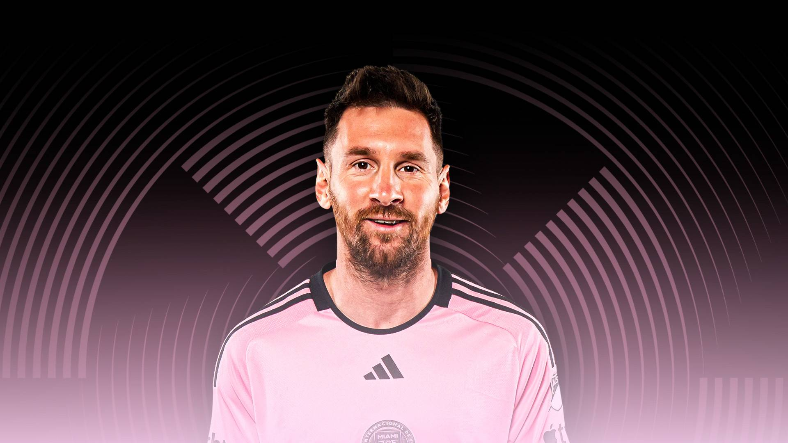

Lionel Andrés Messi Cuccittini, conocido como Leo Messi, es un futbolista argentino que juega como delantero o centrocampista. Desde 2023, integra el plantel del Inter Miami de la MLS canadoestadounidense. Es también internacional con la selección de Argentina, de la que es capitán
